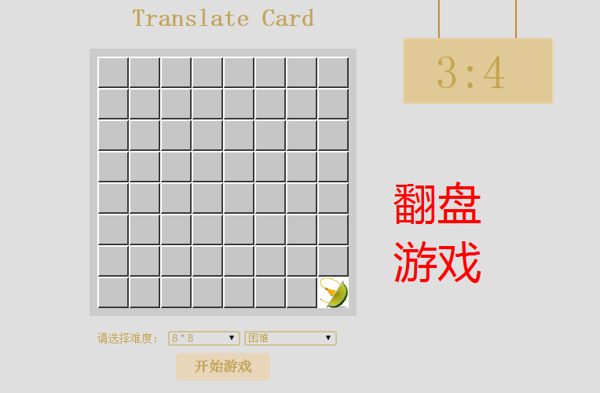
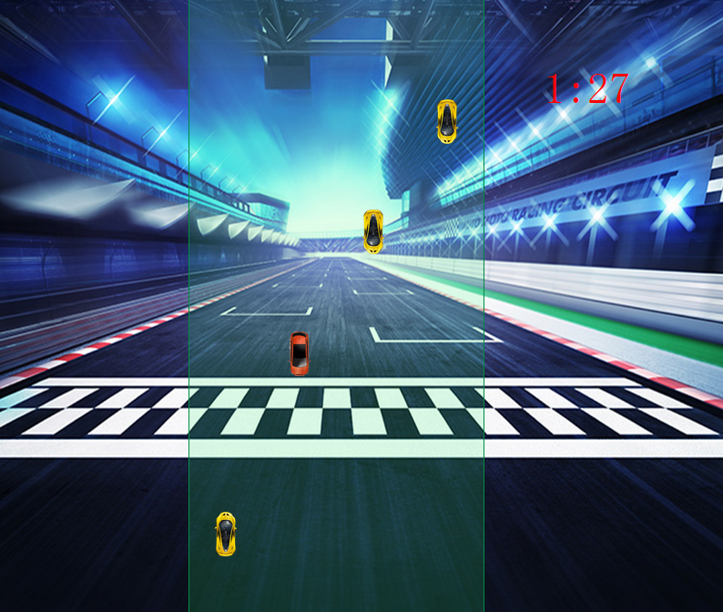
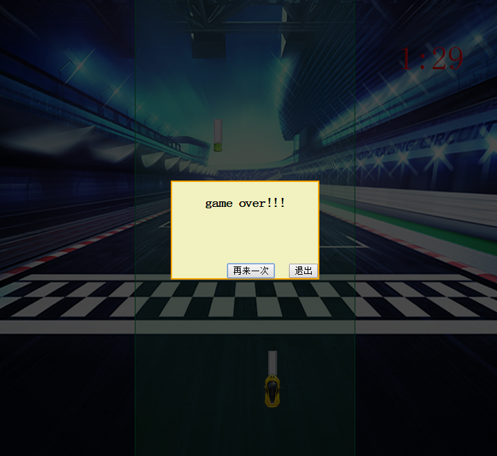
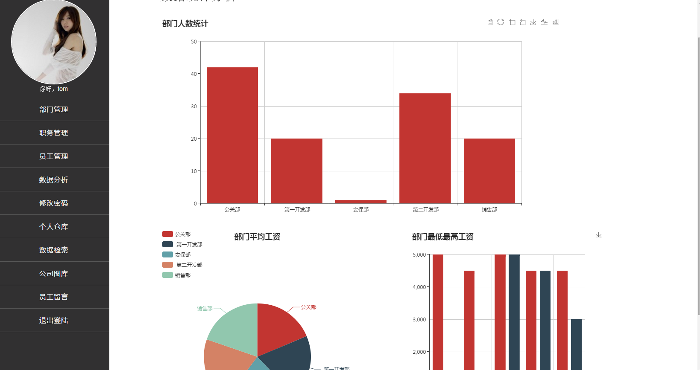
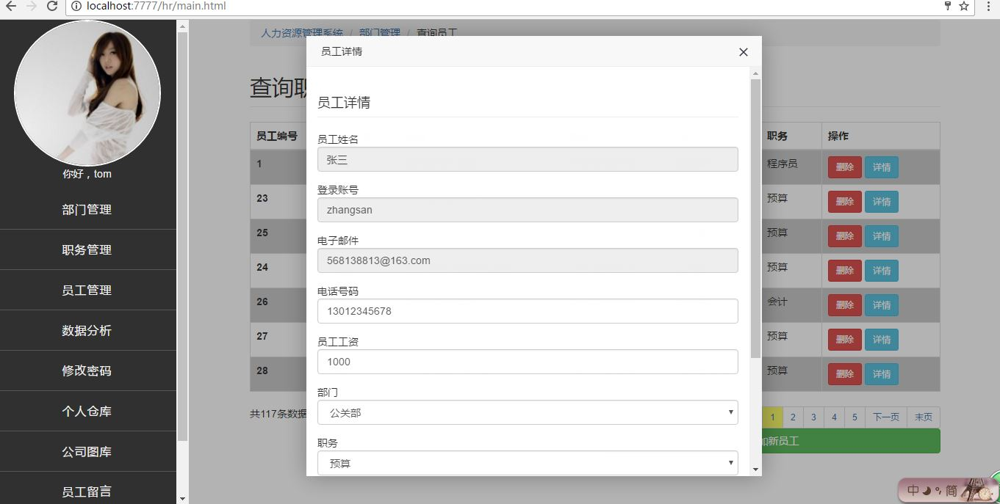

-
求职意向
-
- 工作性质： 实习
- 期望职业： Java开发工程师、
- 期望行业： 计算机软件
- 工作地区： 大连
- 期望月薪： 2001-4000元/月
- 目前状况： 应届毕业生
-
自我评价
-
项目经验
-
2017/05 -- 2017/06
人力资源管理系统
软件环境： tomcat8.5、oracle11g、win7、chrome、firefox、IE
硬件环境： PC、GitHub
开发工具： sublime、hbuilder、firebug、webstorm、JsonView、plsqldev、eclipse
责任描述：
1、在数据库中负责数据库、表的创建
2、java中负责写数据访问层、业务逻辑层、表示层，为前端提供接口
3、前端中负责页面设计、ajax数据交互项目简介：
整体结构采用三层架构，MVC开发模式，采用B/S结构，传统JSP技术和ajax分离式开发，实现企业内部人力资源管理功能，包含用户登录功能，利用base64生成用户头像，采用H5的localstorage进行离线存储，在线进行头像裁剪缩放，数据字典的部门数据维护，职务数据维护，员工信息数据维护，利用后端进行分页检索，ajax请求数据在前端动态生成dom结构，数据分析展示功能，利用后端json数据动态生成echarts图表，公司图库功能，利用二进制流进行图片传输，web前端采用瀑布流布局，ajax异步上传图片，服务器文件下载，利用H5显示上传进度，利用WebSocket双向通信技术实现留言和评论等即时通信功能。整体项目前端采用bootstrap ui框架，css3样式特效，jquery实现前端业务逻辑以及ajax后端交互，layer实现用户提示和模态层展现2017/03 -- 2017/04
玩玩小游戏（github上传作品：https://believexin.github.io/believe_xin/）
软件环境： sublime、hbuilder
硬件环境： PC、GitHub
开发工具： win7 chrome firefox IE
责任描述：
负责素材的收集、页面设计、代码编写项目简介：
通过页面导航进入开始的小游戏、游戏分别为：
1、 赛车游戏：利用定时器、闭包、事件委托随机在不同赛道产生不同的障碍小车。通过，获取元素的相对于视口的位置信息判断是两车是否相撞。而且实现了移动端适配。
2、翻盘游戏：利用随机函数、DHTML方式在页面动态生成图片，并且利用时间委托给图片添加单击事件，利用自定义属性，通过数组遍历修改不是两两配对的图片。最后还实现了菜单联动。 -
教育经历
-
2014/09 -- 至今
渤海大学 | 计算机科学与技术 | 本科 | 统招
-
在校学习情况
-
2016/11 程序设计大赛一等奖 院校级
通讯录管理系统
-
在校实践经验
-
证书
-
2016/03
驾驶执照
-
2016/12
普通话等级证书
-
语言能力
-
英语 ：读写能力良好 | 听说能力一般
-
专业技能
-
jquery、bootsrtap | 熟练 | 5
-
html5、css3 | 良好 | 6
-
html、css、JavaScript | 熟练 | 7
-
Oracle数据库 | 熟练 | 8
-
Java基础 | 熟练 | 10
-
JSP传统式开发 | 良好 | 5
-
ajax分离式开发 | 熟练 | 5
-
javaEE、jdbc | 熟练 | 8
-
兴趣爱好（武术）
-
习练少北武术4年，感觉武术对我的身心有很好的锻炼，武术可以磨练意志，习练武术让我有更强的团体意识和集体荣誉感，增强了我的社会责任感。最重要的是让我有一个好的体魄，更能吃苦耐劳。
-
附件
-
翻盘游戏
-

翻盘游戏
-

赛车游戏
-

赛车游戏
-

资源管理系统的头像上传
-

资源管理系统的头像上传